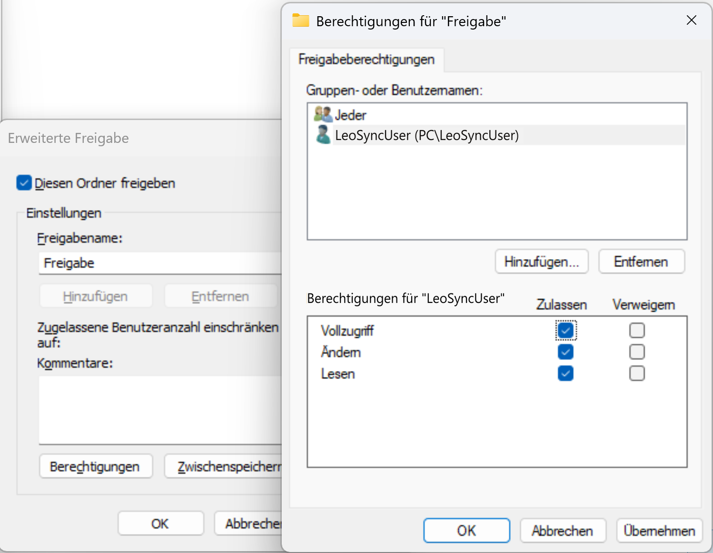
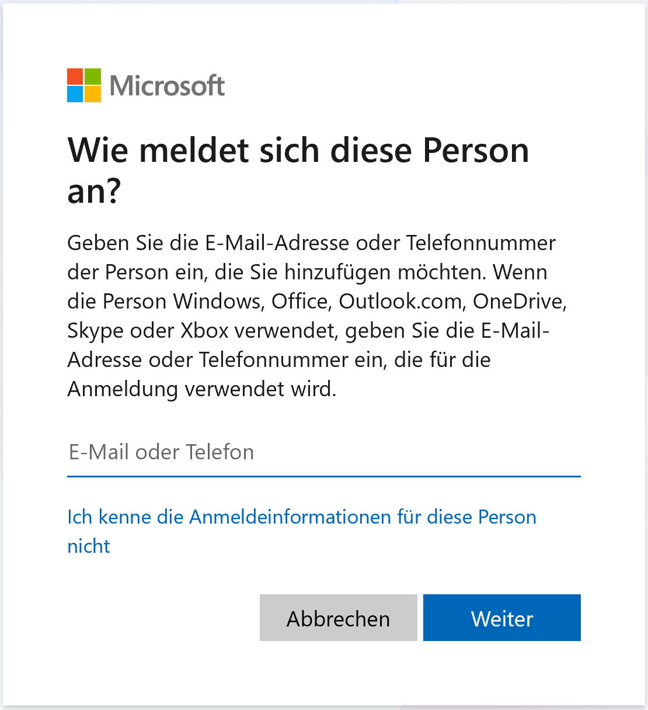
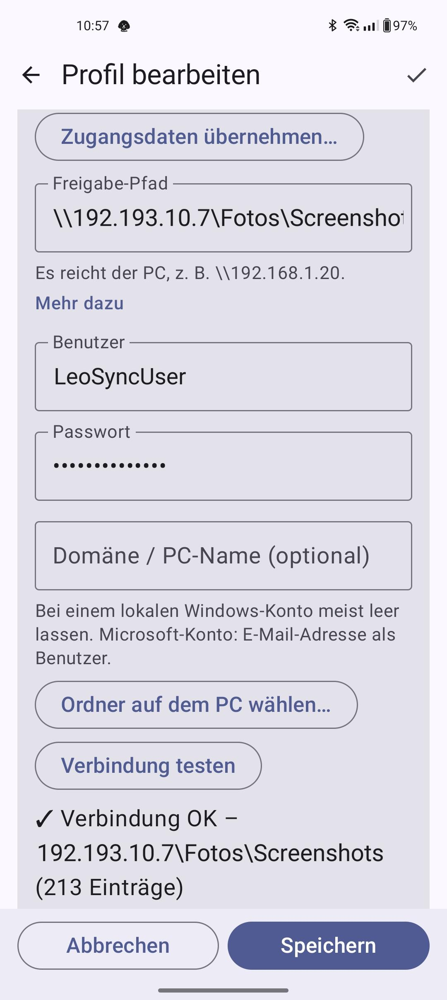
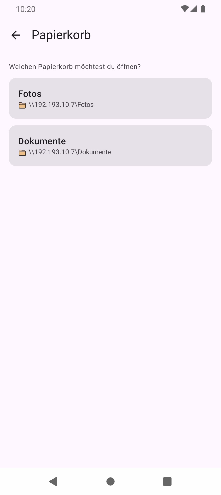
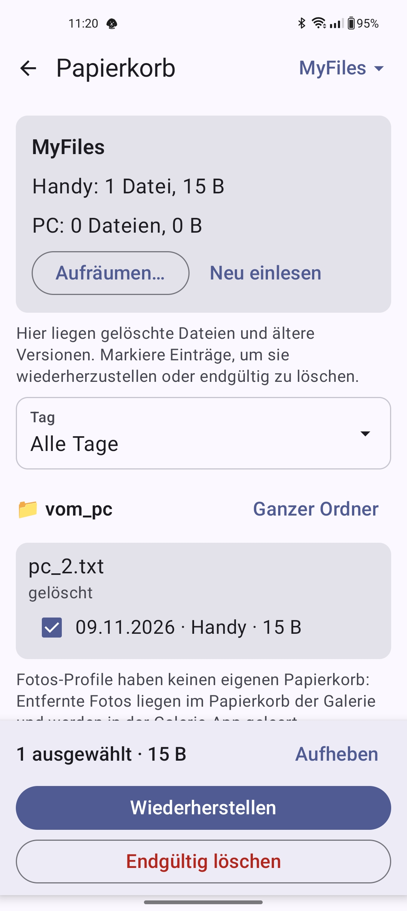
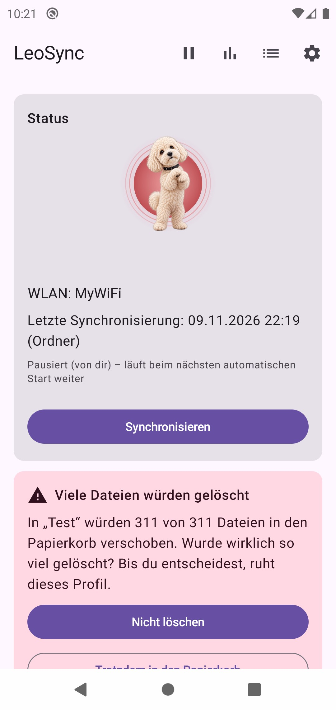
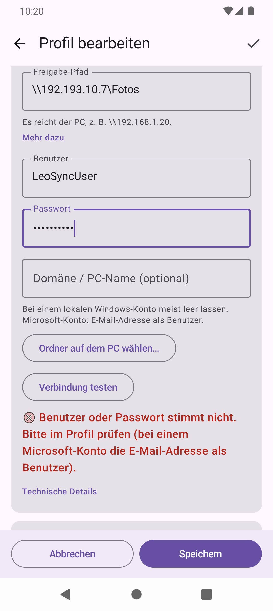
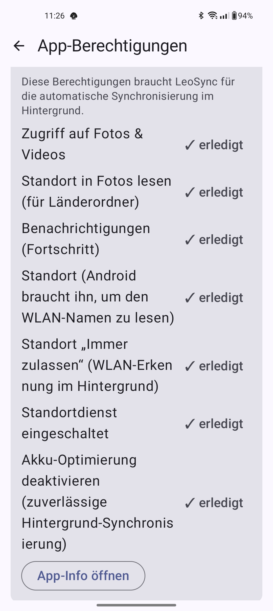

LeoSync sichert Fotos, Videos und beliebige Ordner vom Handy auf deinen Windows-PC – direkt im Heimnetz, ohne Cloud und ohne Konto. Die Dateien gehen nur zwischen Handy und PC.
1. Auf dem PC: Ordner freigeben
- Im Explorer mit der rechten Maustaste auf den Zielordner (z. B.
D:\Fotos) → Eigenschaften → Freigabe → Erweiterte Freigabe. - Diesen Ordner freigeben anhaken und einen Freigabenamen vergeben (z. B.
Fotos). - Unter Berechtigungen deinem Windows-Benutzer Ändern und Lesen erlauben.
- Die IP-Adresse des PCs findest du mit
ipconfigin der Eingabeaufforderung (z. B.192.168.1.20). Am besten richtest du im Router eine feste Adresse für den PC ein.


Eigenen lokalen Benutzer für LeoSync anlegen
Statt deines normalen Windows-Kontos kannst du einen eigenen lokalen Benutzer nur für LeoSync verwenden. So steht dein persönliches Passwort (oder das deines Microsoft-Kontos) nicht in der App, und der Benutzer erhält nur Rechte auf den einen freigegebenen Ordner.
- Benutzer anlegen: Einstellungen → Konten → Andere Benutzer (Windows 10: Familie & andere Benutzer) → Konto hinzufügen → Ich kenne die Anmeldeinformationen dieser Person nicht → Benutzer ohne Microsoft-Konto hinzufügen. Vergib einen Benutzernamen (z. B.
leosync) und ein Passwort. Das Passwort darf nicht leer sein, denn Windows verweigert den Netzwerkzugriff mit leerem Passwort.
Alternativ geht es in der Eingabeaufforderung, die du als Administrator öffnest:net user leosync * /add. Windows fragt dann nach dem Passwort. - Freigabe-Berechtigung: Im Explorer rechte Maustaste auf den Zielordner → Eigenschaften → Freigabe → Erweiterte Freigabe → Berechtigungen → Hinzufügen. Gib den Benutzernamen ein, tippe auf Namen überprüfen und bestätige mit OK. Erlaube dann Ändern und Lesen.
- Ordner-Berechtigung: Im selben Eigenschaften-Fenster auf Sicherheit → Bearbeiten → Hinzufügen, den Benutzer eintragen und Ändern erlauben. Windows prüft Freigabe- und Ordnerrechte, es gilt jeweils die strengere Einstellung.
- In LeoSync eintragen: Gib im Profil den neuen Benutzernamen und sein Passwort ein. Das Feld für die Domäne lässt du bei einem lokalen Konto meist leer. Klappt die Anmeldung nicht, versuche
PC-NAME\leosyncals Benutzer. Den PC-Namen findest du unter Einstellungen → System → Info. Mit Verbindung testen prüfst du das Ergebnis.
So sieht Schritt 1 in Windows aus:



2. In LeoSync: Profil anlegen
Tippe auf Profil hinzufügen und wähle den Typ:
- Fotos & Videos sichern – von der Kamera auf den PC, automatisch sortiert nach Jahr, Monat und Reiseland (z. B.
2026\06 - Ägypten). Auf Wunsch werden die Fotos danach vom Handy entfernt. - Ordner synchronisieren – ein beliebiger Ordner 1:1, in eine oder beide Richtungen.
Der Assistent führt Schritt für Schritt durch Name, Quelle, Ziel und Optionen. Beim Ziel genügt der PC (\\192.168.1.20) mit Benutzer und Passwort; Ordner auf dem PC wählen… zeigt dann die Freigaben und Ordner zur Auswahl. Mit Verbindung testen siehst du sofort, ob alles stimmt.
Bei Fotos-Profilen wählst du die Ordnerstruktur: Jahr\Monat - Land (Standard), Jahr\Land\Monat oder Jahr\Monat\Land. Sie lässt sich bis zur ersten Synchronisierung des Profils ändern. Mehrere Fotos-Profile mit demselben Ziel müssen dieselbe Struktur verwenden.
Unter PC-Kennung legst du pro Profil fest, woran LeoSync deinen PC erkennt: Nur WLAN-Name (Standard für bestehende Profile), Nur PC-Kennung oder Beides. Die Kennung wird geprüft, bevor Benutzername und Passwort gesendet werden. Nach einer Änderung bestätigst du sie mit Verbindung testen. Nach einer Neuinstallation von Windows ändert sich die Kennung; dann das Profil öffnen und erneut Verbindung testen tippen. Bei manchen NAS-Geräten (Samba) ist die Kennung möglicherweise nicht stabil; dort Nur WLAN-Name verwenden.
Zahlenfelder im Profil akzeptieren nur Werte im erlaubten Bereich: Papierkorb leeren nach … Tagen 0 bis 3650 (0 = nie), Auf Änderungen prüfen alle … Minuten 15 bis 1440, Schutzbremse 1 bis 100 %. Ein ungültiger Wert wird unter dem Feld gemeldet; Speichern ist dann gesperrt. Im Assistenten lässt Weiter einen Schritt mit leerem oder ungültigem Zahlenfeld nicht verlassen; Speichern springt dort zum ersten fehlerhaften Schritt. Bei Filtern wird ein Muster mit nicht geschlossener Klammer abgelehnt. Die Filterkarte zeigt eine Kurzfassung, auf der Profilkarte steht Filter aktiv.
Beim Speichern warnt LeoSync, wenn sich Profile überschneiden, auch zwischen einem Fotos-Profil und einem Ordner-Profil: wenn der Zielordner des Fotos-Profils gleich dem PC-Ordner des Ordner-Profils ist, darin liegt oder ihn enthält, und wenn ein Fotos-Quellordner und der Handy-Ordner ineinander liegen, während das Ordner-Profil Dateien aufs Handy lädt. Mit Trotzdem speichern machst du weiter.
Verschlüsselung einschalten
Auf der Karte Verschlüsselung im Profil (standardmässig eingeklappt) legst du pro Profil fest, ob die Übertragung zum PC verschlüsselt wird, damit niemand im Netz mitlesen kann:
- Aus: keine Verschlüsselung, wie bisher. Nur in einem Netz empfohlen, dem du vertraust.
- Wenn möglich (empfohlen): verschlüsselt, sobald der PC es kann. Sonst läuft die Verbindung unverschlüsselt weiter. Das ist der Standard, auch für bestehende Profile.
- Erforderlich: verbindet nur verschlüsselt. Kann der PC das nicht, kommt keine Verbindung zustande und es wird kein Passwort gesendet. Am sichersten.
Verbindung testen zeigt, ob die Verbindung verschlüsselt ist, und welche SMB-Version verwendet wird. Verschlüsselung gibt es nur ab SMB 3; Windows 10 und 11 unterstützen sie, bei einem NAS (Samba) hängt es von dessen Einstellungen ab. Ist Erforderlich gewählt und der PC kann nicht verschlüsseln, erscheint eine Meldung dazu.
Neue Profile starten erst, wenn du einmal Synchronisieren tippst. Du kannst vorher simulieren, was passieren würde.



3. Im Alltag
- Automatisch: Sobald das Handy mit einem eingetragenen WLAN verbunden ist, synchronisiert LeoSync im Hintergrund. Ohne WLAN-Namen nur, wenn du es auslöst.
- Mobile Daten/VPN: Unter Einstellungen → Übertragung kannst du die Automatik auch ausserhalb des WLAN zulassen (standardmässig aus). Das kann Datenverbrauch und bei manchen Mobilfunkabos Kosten verursachen, etwa im Ausland. Ist der PC nicht erreichbar, prüft LeoSync ausserhalb des WLAN nur alle 2 Stunden erneut.
- Nur beim Laden: Auf Wunsch synchronisiert LeoSync nur, solange das Handy am Ladegerät hängt (Einstellungen).
- Von Hand: Synchronisieren tippen oder auf der Startseite ganz oben nach unten ziehen. Läuft gerade eine Synchronisierung, wird dein Start nicht verworfen, sondern danach genau einmal nachgeholt: LeoSync meldet «Wird nach der laufenden Synchronisierung gestartet.», und die Statuskarte zeigt «Danach: alle Profile» (bei einem automatischen Start «Danach folgt eine weitere Synchronisierung.»). Pausieren oder Abbrechen verwirft den vorgemerkten Start.
- Pausieren: ⏸ oben rechts – für eine Zeit oder «für immer» (nur noch von Hand). ▶ setzt fort.
- Der Hund zeigt den Zustand: schläft = alles gesichert, läuft = Synchronisierung läuft, steht = wartet auf deine Entscheidung, sitzt = wartet (z. B. auf das WLAN oder die erste Synchronisierung). Die Statuskarte meldet «alles aktuell» nie bei einem offenen Konflikt, fehlender Verbindung oder einem Fehler im letzten Lauf.
- Speicher freigeben: Auf der Startseite unter den Werkzeugen entfernt LeoSync alte Dateien vom Handy, die nachweislich auf dem PC liegen. Jede Datei wird vorher auf dem PC geprüft; du wählst nach Alter, Ordner, Dateityp und Grösse und siehst eine Vorschau. Fotos und Videos kommen in den Papierkorb der Galerie (unter Android 10 gibt es ihn nicht; ein Hinweis weist darauf hin). Das Ergebnis nennt, wie viele Dateien gelöscht und übersprungen wurden und wie viel Speicher frei wurde.
- Sicherung der Einstellungen: Profile, Einstellungen und Synchronisierungsstand lassen sich als Datei exportieren und wieder importieren. Passwörter sind dabei nur mit einem Export-Passwort verschlüsselt enthalten. Die App-Sprache gehört nicht zur Sicherung. Beim Import ist Ersetzen in Warnfarbe hervorgehoben, weil es die vorhandenen Profile ersetzt.
- Verlauf: Mit Verlauf löschen entfernst du die Einträge. LeoSync fragt vorher nach und bietet danach Rückgängig an, solange die Meldung unten zu sehen ist. Bei Fehlereinträgen steht eine Handlungsempfehlung. Der Verlauf-Filter setzt sich beim Verlassen der Seite zurück.
- Sprache: LeoSync folgt der Handy-Sprache (Deutsch, sonst Englisch). Unter Einstellungen → Sprache lässt sie sich fest wählen.


4. Sicherheit deiner Dateien
- Prüfung nach dem Hochladen: LeoSync liest die Datei auf dem PC zurück und vergleicht sie mit dem Original. Die Stufen reichen von Aus bis Komplett, Standard ist Mittel. Wer Fotos vom Handy entfernen lässt, prüft immer.
- Papierkorb: Bei Ordner-Profilen landen gelöschte und überschriebene Dateien im Ordner
.LeoSync-Bin(auf Handy und PC) und lassen sich über Tools → Papierkorb zurückholen: Profil wählen, Einträge markieren und Wiederherstellen tippen (oder Endgültig löschen). Nach 30 Tagen (einstellbar) wird er geleert. Fotos-Profile haben keinen eigenen Papierkorb: Entfernte Fotos liegen im Papierkorb der Galerie. - Schutzbremse: Würden auf einmal viele Dateien gelöscht (Standard: mehr als 20 %) oder fehlt ein ganzer Ordner, hält LeoSync an und fragt dich zuerst. Du entscheidest dann zwischen Nicht löschen und Trotzdem in den Papierkorb; bis dahin ruht das Profil.
- Änderung bestätigen: Änderst du bei einem bestehenden Ordner-Profil die Richtung oder schaltest Löschungen übernehmen ein, zeigt LeoSync vor dem Speichern, was sich ändert, und du bestätigst mit Speichern oder brichst mit Abbrechen ab. Bei einer Richtung nur in eine Richtung werden abweichende Dateien auf der Zielseite ersetzt; die ersetzte Version kann in den Papierkorb kommen.
- Entfernen nach der Sicherung: Bevor LeoSync ein gesichertes Foto vom Handy entfernt, prüft es die Kopie auf dem PC erneut. Ist der PC nicht erreichbar, wird nichts gelöscht («PC nicht erreichbar – nichts gelöscht»). Fehlt die Kopie oder weicht sie ab, bleibt das Original auf dem Handy und wird beim nächsten Lauf erneut gesichert. Speicher freigeben prüft zusätzlich Grösse, Teil-Prüfsumme und Änderungsdatum.
- Konflikte: Wurde dieselbe Datei auf Handy und PC geändert, entscheidest du, welche Version gilt. Die andere kommt in den Papierkorb.
- Verschlüsselung: Mit der Stufe Erforderlich sendet LeoSync Benutzername und Passwort nur, wenn die Verbindung verschlüsselt werden kann (siehe Verschlüsselung einschalten).
- PC-Kennung: Ist sie aktiviert, sendet LeoSync Benutzername und Passwort nur an einen erkannten PC. Bei einem unbekannten PC meldet sich die App nicht an und überspringt das Profil. Die Kennung ist nicht geheim: Sie schützt vor einem fremden Server in einem fremden Netz, nicht vor einem gezielten Angriff.



5. Häufige Meldungen
So erscheint eine Meldung beim Verbindung testen (hier: Benutzer oder Passwort stimmt nicht):

| Meldung | Was tun? |
|---|---|
| Benutzer oder Passwort stimmt nicht | Windows-Benutzer und Passwort prüfen. Bei einem Microsoft-Konto die E-Mail-Adresse als Benutzer verwenden. Oder lege einen eigenen lokalen Benutzer an. |
| Diese Freigabe gibt es auf dem PC nicht | Freigabenamen prüfen oder mit Ordner auf dem PC wählen… auswählen. |
| Kein Zugriff auf diesen Ordner | In den Freigabe-Berechtigungen dem Benutzer Ändern erlauben. |
| Der PC ist nicht erreichbar | PC eingeschaltet (nicht im Ruhezustand)? Handy im selben WLAN? Firewall erlaubt «Datei- und Druckerfreigabe»? |
| Der PC ist noch nicht erkannt / PC unbekannt | Es wurden keine Anmeldedaten gesendet. Im eigenen WLAN das Profil öffnen und Verbindung testen tippen. Liefert der PC keine Kennung (z. B. manche NAS), die PC-Kennung auf Nur WLAN-Name stellen. |
| Der PC-Name wurde nicht gefunden | Statt des Namens die IP-Adresse eintragen, z. B. \\192.168.1.20. |
| PC-Ordner nicht gefunden (Schutzbremse) | Wurde der Ordner umbenannt oder verschoben? Zurückbenennen und Erneut prüfen tippen – oder einen neuen Ordner wählen. |
6. Synchronisierung bricht im Hintergrund ab
Viele Hersteller beenden Apps im Hintergrund sehr streng. In LeoSync unter Einstellungen → App-Berechtigungen siehst du, welche Berechtigungen LeoSync für die automatische Synchronisierung im Hintergrund braucht und welche schon erledigt sind: Zugriff auf Fotos und Videos, Benachrichtigungen, Standort (Android braucht ihn, um den WLAN-Namen zu lesen) und Akku-Optimierung deaktivieren. Mehr dazu: dontkillmyapp.com.

7. Datenschutz
LeoSync hat keinen Server und sammelt keine Daten. Passwörter werden verschlüsselt auf dem Handy gespeichert (Android Keystore). Diagnosedaten verlassen das Handy nur, wenn du sie selbst teilst. Details findest du in der Datenschutzerklärung.
Kontakt
Fragen oder Probleme: leotools@protonmail.com. Fehlerberichte und Vorschläge kannst du auch über GitHub Issues einreichen.